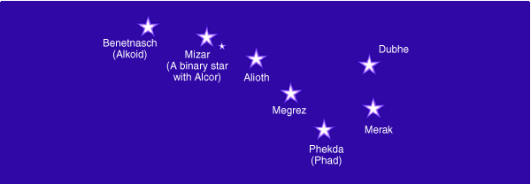

Všeobecné informace o sedmi kvalitách Bo�í Vùle
kontakt na anglické diskusní Fórum Bo�í Vùle
Zveme vás, abyste se pøipojili ke studijní skupinì prostøednictvím poslechu Orinovıch pásek (angl.) øady Millenium: Transformace pomocí Bo�í Vùle a Èást II: Jak pro�ít �ivot podle vaší duše s pomocí Vùle Bo�í. Více informací o ka�dé kvalitì Vùle je v�dy v patøièné sekci na www stránkách. Tam jsou té� k nalezení informace o probíhajícím studijním programu (angl.). V tomto materiálu jsou uvedeny jen všeobecné informace.
Velkı Vùz ze souhvìzdí Velké Medvìdice, reprezentující sedm kvalit Bo�í Vùle:

Sedm kvalit Bo�í Vùle - Shrnutí.
Orin: Zvu vás k transformaci vašeho �ivota pomocí práce s Bo�í Vùlí. Sedm kvalit Bo�í Vùle patøí k jednìm z nejmocnìjších sil pùsobících ve vesmíru. Vìdomé vta�ení Bo�í Vùle do vašeho �ivota vám pomù�e odhalit váš nejvyšší potenciál, rozšíøit vaše vìdomí, a pomoci vám tvoøit v souladu Bo�skım Plánem a nejvyšším zámìrem vašeho �ivota.
Spojení s Bo�í Vùlí mù�e otevøít váš vnitøní zrak, prohloubit vaší intuici, odstranit omezení, osvobodit vašeho ducha z pout hmoty, a umo�nit vám vytváøet vaši budoucnost podle nejvyššího zámìru. Kdy� jste spojeni s Bo�í Vùlí, lépe si uvìdomujete váš nejvyšší cíl i èinnosti, které naplòují zámìry vaší duše v pozemském �ivotì. Kdy� jste spojeni s Bo�í Vùlí, lépe si uvìdomujete plány lidstva, plány vaší duše i její nejvyšší zámìr, Mistry i Osvícené bytosti, celek jeho� jste souèástí. Bli�ší informace k jednotlivım kvalitám naleznete na originálních stránkách.
Co Vùle Bo�í není.
Bo�í Vùle není urèena k dosahování cílù a naplòování sobeckıch potøeb a rozhodnutí. Bo�í Vùle je mocná, èistá, spirituální energie, která proudí z nejvyšších dimenzí. Kdy� ji k sobì voláte, dojde k nesmírné infuzi spirituální energie do vašeho �ivota, probuzení nového vìdomí a seberealizaci. Kdy� pracujete s Bo�í Vùlí, posilujete svoji vlastní vùli, stanovujete své zámìry a slaïujete se s vùlí vaší duše. Bo�í Vùle vnese do vaší osobnosti nové schopnosti a více síly pro uskuteènìní zámìrù a cílù vaší duše. Tato práce vnese do vašeho �ivota velké a krásné zmìny.
Bo�í Vùle urychluje váš vıvoj.
Pro transformaci pomocí Bo�í Vùle ji musíte kontaktovat, zavolat ji k sobì a otevøít se, abyste ji mohli pøijmout. Lze ji vyu�ít pouze pro dobro a svìtlo. Kdy� do sebe Bo�í Vùli vtáhnete, stanete se vysílaèem Bo�í Vùle do svého �ivota, do �ivota druhıch i do rostlinné, �ivoèišné a minerální øíše. Rozšiøování energií Bo�í Vùle urychlí váš vlastní vıvoj i vıvoj druhıch. I kdy� vám mù�e pøipadat, �e pou�íváte vaší pøedstavivost, Bo�í Vùle k vám sestoupí, kdy� ji zavoláte.
Touha versus Bo�í Vùle
Touhu lze pova�ovat za vaši osobní vùli. Touha vychází z pozemské úrovnì a míøí smìrem vzhùru. Touha, která je dostateènì silná - napø. touha po duchovním rùstu a osvícení, nebo touha slou�it lidstvu, mù�e do vašeho �ivota vtáhnout Bo�í Vùli.
Bo�í Vùle vychází z vyšších úrovní, sestupuje dolù a transformuje všechny úrovnì vašeho bytí a veškeré energie, se kterımi pøijde do styku.
Aèkoliv mù�ete povolat Bo�í Vùli do vašeho �ivota, aby vám pomohla s naplnìním nìjaké vaší osobní touhy, jakmile k vám Bo�í Vùle sestoupí, pozmìní vaši osobní vùli a touhy. Vaše duše chce pro váš �ivot mnohem více, ne� si vaše osobnost vùbec umí pøedstavit. To po èem tou�íte se zmìní, jakmile se touhy vaší osobnosti transformují pùsobením Bo�í Vùle, proto�e pak bude vaše osobnost tou�it po tom, co bude slou�it cílùm vaší duše a bo�skému plánu vašeho �ivota. Bo�í Vùle se jednoduše stane vaší vùlí. Budete mít pocit, �e tak jste to vlastnì v�dycky chtìli.
Kdy� do sebe vtáhnete Bo�í Vùli, budete mnohem snadnìji cítit co máte dìlat a dostanete dostatek energie na zvládnutí èinností, které s tím souvisí. Mnohé zmìny, které vta�ení Bo�í Vùle vytvoøí, se projeví ve formì, nebo rozšíøení vìdomí, které si uvìdomíte a� po nìjaké dobì nebo mo�ná vùbec ne. Jakmile lidé expandují na novou úroveò uvìdomìní, vìtšinou si nepamatují jací pøed tím byli a vezmou nové vìdomí tak, jak jej dostanou. Bo�í Vùle se jednoduše stane vaší Vùlí. Budete mít pocit, �e tak jste to vlastnì v�dycky chtìli.
Neoèekávejte, �e vás Bo�í Vùle "pøevezme" a �e se najednou nebudete muset o nic starat. �ijete na planetì svobodné vùle a uèíte se, jak si volit takové vìci, které slou�í vašemu vyššímu dobru. Vy jste ti, kteøí musí jednat a konat podle pøíkazù vašeho nitra.
Vytváøení novıch pøíle�itostí s pomocí Bo�í Vùle
Pøivoláním Bo�í Vùle do svého �ivota zasejete semínka zmìn a evoluce, jejich� úrodu budete sklízet v následujících letech. Budete postaveni pøed nové pøíle�itosti, otevøou se vám nové cesty, vaše vìdomí se bude stále více rozšiøovat. Bo�í Vùle vás bude jemnì a laskavì postrkovat urèitım smìrem a budete více pøitahovat hojnost a vše co je dobré pro vaše vyšší dobro. Mo�ná si ani nespojíte nové pøíle�itosti a zmìny s vaší nynìjší prací.
Bo�í Vùle pøivolaná do vašeho �ivota vás naplní spirituální energií. Zmìny nastanou ve všech oblastech, na které nasmìrujete Bo�í Vùli, proto�e ta transformuje vše, naè je nasmìrována. Nikdy však nebudete vìdìt, jaké tyto zmìny budou, kdy nastanou, èi jak budou vypadat. Všechny zmìny, které nastanou, vás však v�dy pøiblí�í "Bo�skému plánu" vašeho �ivota a vyšší cestì vašeho vıvoje.
Spojení s Bo�í Vùlí zmìní lidstvo
Vìtšina lidí doposud není schopná pro�ít zkušenost spojení s Bo�í Vùlí, nebo� to vy�aduje jistı stupeò citlivosti na jemnohmotné energie. Kdy� se i jenom nìkolik lidí spojí s Bo�í Vùlí a budou podle toho �ít, mnozí tyto kvality Bo�í Vùle rozeznají a èasem je rozeznají všichni.
Pro lidstvo je spojení, sjednocení, vta�ení a povolání do sebe energií Bo�í Vùle nutné k tomu, aby zvládlo další krok svého vıvoje. Po�adované zmìny mohou bıt nastartovány, kdy� na nì lidstvo zamìøí svoji vùli jako skupina, nechá se inspirovat láskou, vyjádøí se pomocí intelektu a bude vedeno Bo�í Vùlí. Jakmile dostateèné mno�ství lidí povolá a bude �ít v souladu s Bo�í Vùlí, celé lidstvo zaène pøesouvat svoji orientaci ke svìtlu a tím zpùsobem dojde k uvìdomìní si vyššího cíle lidstva a ten bude moci bıt naplnìn a i ostatní øíše budou moci dosáhnout vyšší úrovnì svého vıvoje.
Kdo jsou Velké Bytosti rozšiøující Bo�í Vùli?
Velké Bytosti rozšiøující Bo�í Vùli jsou té� nazıváni "Páni paprskù, Velcí Mistøi, nebo Strá�ci", nebo� pùsobí jako strá�ci Vùle Boha/Bohynì/ Všeho Co Je, a pøedávají tyto energie do vašeho Sluneèního systému a na Zemi. Oni lidstvu pøinášejí energii Bo�í Vùle. Odvìká uèení škol mystérií naznaèují, �e jejich vnìjším vyjádøením v èase a prostoru je sedm hvìzd v souhvìzdí Velké Medvìdice, kde tvoøí Velkı Vùz. Tyto hvìzdy jsou "tìla" sedmi Velkıch Bytostí, které lidstvu pøedávají Bo�í Vùli, pramenící z ještì vyšších zdrojù. Aby bylo mo�né spojit se s tìmito Bytostmi a vnést do svého �ivota energie Bo�í Vùle, není nezbytné si je pøedstavovat jako hvìzdy, nebo jako Bytosti. Jediné co potøebujete je zámìr spojit se s nimi a pøivolat tyto mocné energie do svého �ivota, aby transformovali váš �ivot.
Zaseli jste semínka.
Nemìjte obavy, kdy� ve svém �ivotì hned nezaregistrujete nìjaké vnìjší zmìny. Ka�dé zaseté semínko potøebuje urèitı èas. Tato práce polo�ila základy posunu k �ivotu mnohem naplnìnìjšímu vaší duší. Nepotøebujete okam�itì pøeorganizovat celı svùj �ivot nebo naplnit všechny své sny bìhem pár dní nebo tıdnù!
Kdy� jste do svého �ivota zavolali Bo�í Vùli, naplní váš �ivot spirituální energií. Zmìny se projeví ve všech oblastech, na které tuto Bo�í Vùli nasmìrujete, proto�e Bo�í Vùle transformuje vše, naè je nasmìrována. Nikdy však nevíte, jaké zmìny to budou, kdy nastanou, nebo jak budou vypadat. Tyto zmìny, které nastanou vás však v�dy pøiblí�í "Bo�skému plánu" vašeho �ivota a vaši cestì vyššího vıvoje.
Jakmile si zavoláte Bo�í Vùli a pošlete ji vašim zámìrùm, nastavujete energii aby tekla do vašich zámìrù. Mù�e však trvat dny, mìsíce, èi déle, ne� se vaše zámìry zaènou manifestovat. Uèíte se, jak s energiemi Bo�í Vùle pracovat, abyste dosáhli uskuteènìní vašich zámìrù. Mo�ná budete muset s nìkterou kvalitou Bo�í Vùle pracovat znovu a znovu, ne� dojde ke zmìnì ve vašem �ivotì a cíl vaší duše a bo�skı plán dojde naplnìní.
Mo�ná zjistíte, �e nìkteré kvality Vùle jsou vám velmi dobøe známé, zatímco jiné mnohem ménì, a proto není tak snadné s nimi pracovat. Jak budete procházet tímto kurzem uvìdomte si, které kvality Vùle jsou pro vás nejdùle�itìjší. Pøitahujte k sobì tuto kvalitu tak èasto, jak jen mù�ete. Té� si uvìdomujte, pro�itky které kvality se vám zdají nejobtí�nìjší, proto�e velmi èasto právì to jsou kvality, které vás nejvíce posunou ve vašem vıvoji.
Co dìlá Bo�í Vùle.
Pøekonává: Bo�í Vùle je celistvá a kompletní a vidí všechny vìci od jejich poèátku a� ke konci - minulost, pøítomnost i budoucnost - ale ví, �e osobní já se musí rozpínat k plné realizaci postupnì. Proto Vùle pøekonává omezení vlastní osobnosti, které je uzavøeno ve svìtì forem.
Pøedává: Bo�í Vùle je pøedávána, a ti, kteøí ji dostávají se stávají jejími pøedávajícími agenty. Jedním z úèelù lidstva je pøedávání Bo�í Vùle rostlinné, �ivoèišné a minerální øíši, stejnì jako vyšší øíše ji pøedávají lidstvu. Mù�ete ji dostat a pøedat ji dál do jakékoliv oblasti vašeho �ivota, nìkomu druhému, èi dalším øíším.
Pøedìlává: Bo�í Vùle pøedìlává vše s èím pøijde do styku.
Pøemìòuje: Tato pøemìna uvádí mnohost zpìt k jednotì, k jedinému.
S Bo�í Vùlí se mù�ete spojit a dostávat ji od Bytostí pøedávajících jednotlivé její kvality. Jakmile jednou toto spojení navá�ete, mù�ete navíc tuto energii nasmìrovat kamkoli chcete. Pøipojte se k nám a vyzkoušejte si tímto zpùsobem sílu skupinové práce.
Poznámka pro studenty kurzù svìtelného tìla: Mnozí z vás, kteøí procházejí tímto kurzem jsou studenty kurzu svìtelného tìla a proto bychom vám rádi pøedali nìkolik rad jak pou�ívat svìtelné tìlo k rozšíøení zkušeností s Bo�í Vùlí. Èím více jsou vaše svìtelná tìla zharmonizovaná, tím vìtší mno�ství Bo�í Vùle mù�ete pøijmout; zaènìte pou� s Orinem ve vašem "Pouzdøe obnovy", harmonizujte a vyrovnejte ni�ší energetická centra. Kompletní svìtelné vajíèko tìsnì pøed tím, ne� se vybudíte, je nádhernım pro�itkem tìchto Bytostí šíøících Bo�í Vùli.
© Copyright Lumin Essence Productions: Na všechny informace se vztahuje autorskı zákon a nesmìjí bıt bez svolení reprodukovány - viz. Copyrights and Permissions na originálních www.
pøeklad Vratislav Kašpárek 2002